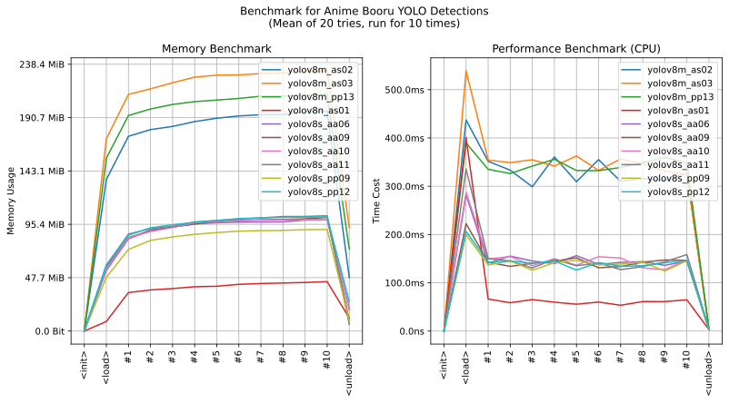

imgutils.detect.booru_yolo
- Overview:
This module provides functionality for object detection using the Booru YOLO model.
The Booru YOLO model is sourced from aperveyev/booru_yolo and model files are hosted on deepghs/booru_yolo.
Overview of Booru YOLO Detect (NSFW Warning!!!)

This is an overall benchmark of all the booru yolo models:
Here is the explanations of each label:
Model Labels and Descriptions No.
Label
Description
0
head
Anime pretty girl and not only
1
bust
Torso part from collarbone center to pair of covered breasts
2
boob
Bust with no bra, nipples mostly visible, generally NSFW
3
shld
Shoulder and maybe one breast viewed mostly in profile, exactly rear view excluded
4
sideb
Uncovered version of shld, with nipples or other NSFW visual marks
5
belly
From belly button to hips half (stocking line), knees below belly, mostly covered
6
nopan
No panty-like clothes on bikini area (regardless of censoring), evidently NSFW belly
7
butt
Buttock area visible at least partially from behind, more or less covered, standing or sitting
8
ass
Uncovered NSFW version of butt
9
split
Sitting with legs open wide (90+ degrees), typically with at least one knee above belly
10
sprd
Strongly NSFW version of split
11
vsplt
Stand split or visually similar pose
12
vsprd
Strongly NSFW version of vsplit
13
hip
Full or almost full hip(-s) side view with knee(-s) above belly, usually when sitting or lying
14
wing
Mostly dragon or pony related
15
feral
All-four non-human torso
16
hdrago
Dragon style head
17
hpony
Pony style head
18
hfox
Cartoon fox / dog head - Zootopia Nick Wilde
19
hrabb
Cartoon rabbit head - Zootopia Judy Hopps or bunnygirl
20
hcat
Cartoon cat or anime catgirl head (less sharp muzzle compared to hfox)
21
hbear
Cartoon bear head
22
jacko
Memetic “Jack’O contest pose” with a head toward viewer
23
jackx
Jacko viewed from behind, sometimes strongly NSFW
24
hhorse
Horse head first implemented in aa09
25
hbird
Bird head first implemented in aa09
Here are the list of available models.
Available Models (PP Series) Model Name
Release Time
Description
yolov8s_pp09
2023.11
PP model focusing on NSFW content with 9 specialized classes, providing advanced detection capabilities for specific NSFW scenarios.
yolov8s_pp12
2024.2
Final patch for PP models, continuing the focus on specialized NSFW content detection with enhanced capabilities and improvements from previous versions.
yolov8m_pp13
2024.2
PP model final patch, focusing on specific NSFW content with 9 specialized classes, offering advanced NSFW detection capabilities.
Available Models (AS Series) Model Name
Release Time
Description
yolov8n_as01
2023.12
Spinoff model with 26 classes trained for 80 epochs on an SFW subset. This model was eventually abandoned due to ineffective results.
yolov8m_as02
2023.12
Spinoff model started using an SFW training subset. It includes 26 classes and was trained for 30 epochs, offering a more public-friendly model with reduced NSFW content.
yolov8m_as03
2024.1
Advanced spinoff model from as02 with 26 classes, trained for 60 epochs. This SFW subset model aims to reduce bottlenecks and improve reproducibility of results.
Available Models (AA Series) Model Name
Release Time
Description
yolov8s_aa06
2023.8
Initial version for current reincarnation with 24 classes trained for 90 epochs. Focuses on general torso components and includes some NSFW content.
yolov8s_aa09
2023.10
Added HHORSE and HBIRD classes, updating the dataset with more head closeups and adjusting for large hats, trained from aa06.
yolov8s_aa10
2023.12
Major training dataset update from aa09, focusing on improving detection of HHORSE and HBIRD and fixing issues with heads wearing large hats.
yolov8s_aa11
2024.1
Latest mainstream general torso components model with 26 classes. It includes an update from aa10 with outstanding mAP scores, though noted to be not completely fair due to training set biases.
detect_with_booru_yolo
- imgutils.detect.booru_yolo.detect_with_booru_yolo(image: str | PathLike | bytes | bytearray | BinaryIO | Image, model_name: str = 'yolov8s_aa11', max_infer_size: int = 640, conf_threshold: float = 0.25, iou_threshold: float = 0.7) List[Tuple[Tuple[int, int, int, int], str, float]][source]
Perform object detection on an image using the Booru YOLO model.
- Parameters:
image (ImageTyping) – Input image to perform detection on.
model_name (str, optional) – Name of the Booru YOLO model to use, defaults to ‘yolov8s_aa11’.
max_infer_size (int, optional) – Maximum inference size for image preprocessing, defaults to 640.
conf_threshold (float, optional) – Confidence threshold for detection, defaults to 0.25.
iou_threshold (float, optional) – IOU threshold for non-maximum suppression, defaults to 0.7.
- Returns:
List of detected objects, each represented as (bounding_box as (x1, y1, x2, y2), label, confidence).
- Return type:
List[Tuple[Tuple[int, int, int, int], str, float]]
- Example:
>>> from imgutils.detect import detect_with_booru_yolo ... >>> detections = detect_with_booru_yolo("path/to/image.jpg") >>> for box, label, confidence in detections: ... print(f"Detected {label} with confidence {confidence:.2f} at {box}")